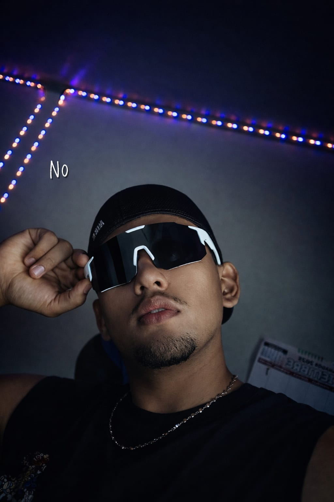

Apasionado por la tecnología y el desarrollo de software, me enfoco en transformar ideas en soluciones digitales funcionales y eficientes. Disfruto aportar valor en cada proyecto, optimizando procesos y creando herramientas que realmente faciliten la vida de las personas. Me adapto con facilidad a nuevos retos, trabajo en equipo y contribuyo activamente en la construcción de soluciones sólidas, siempre priorizando calidad, organización y mejora continua.
Mi objetivo es continuar creciendo profesionalmente mientras ayudo a otros a alcanzar sus metas tecnológicas. Creo en la importancia de escribir código limpio, mantenible y eficiente.
Años Experiencia
Proyectos Completados
Clientes Satisfechos